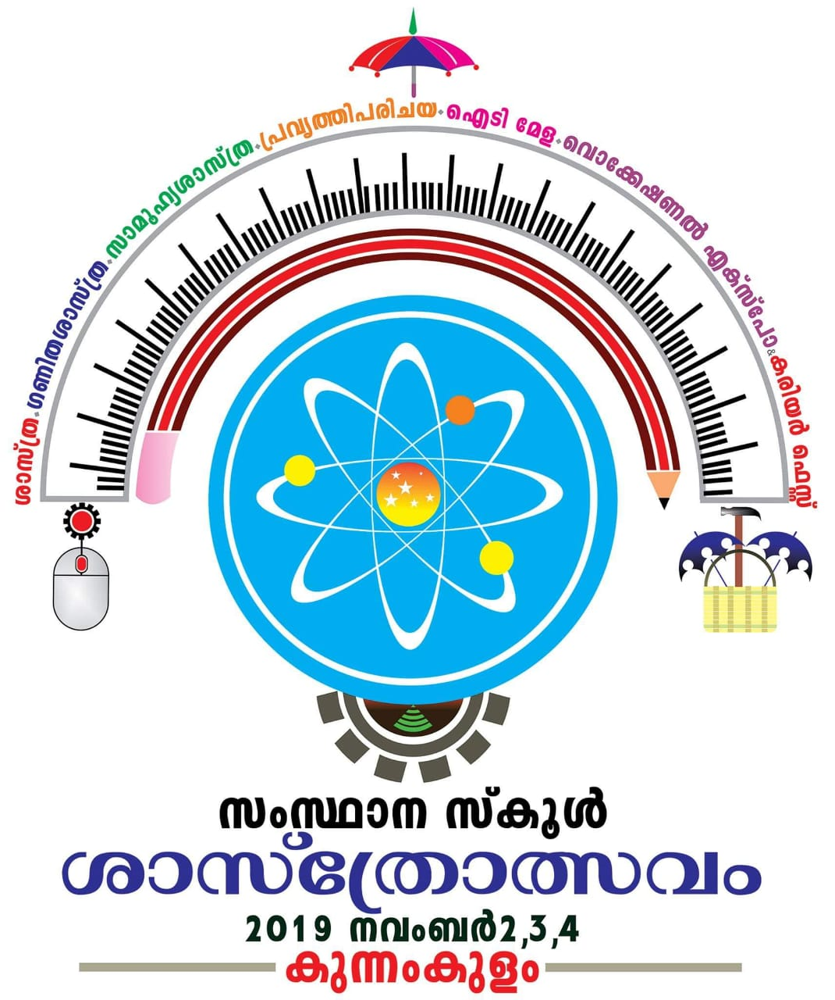
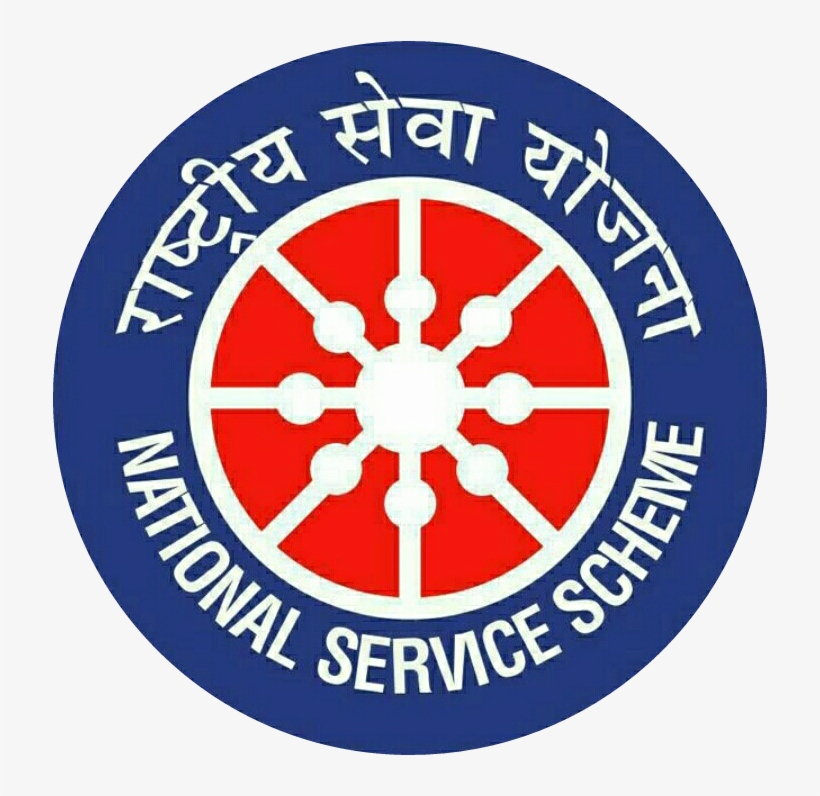
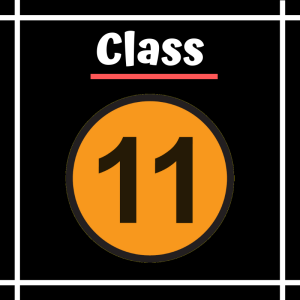

-
Completed 10th

# Recieved my certification of it with 9A+ and 1A.I was very happy and amazed.
-
Won the still model
 # Developed a Still model about farimg and production process of different sectors an presented it For that me and my partner got first on sub-disrtict and second on district level.
-
Worked On NSS(National Service Scheme) for 2 years as a volunteer.
 # A very good experience with the my co-volunteerS.The 7 day camp was also amazing we interact close to others and it actually vanished the introvert from me
-
Completed first year higher secondary
 # Completed my first year higher secondary exam with 93% and got 8th rank on the school